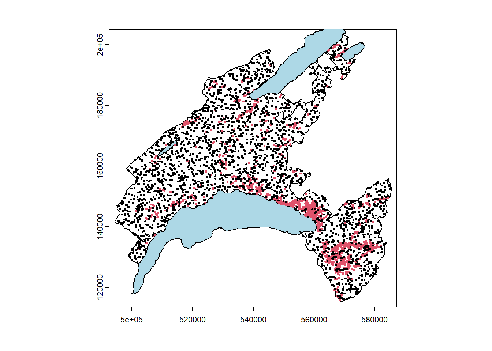
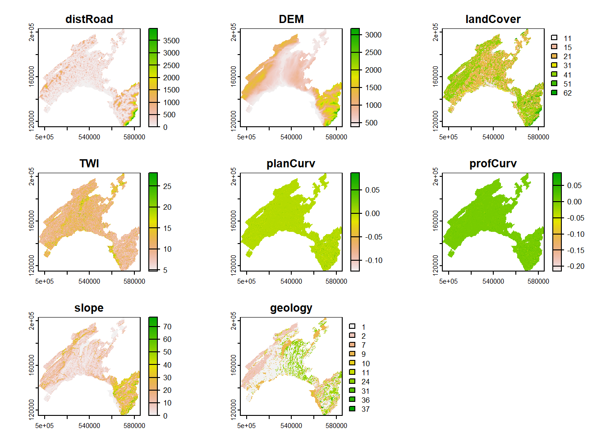
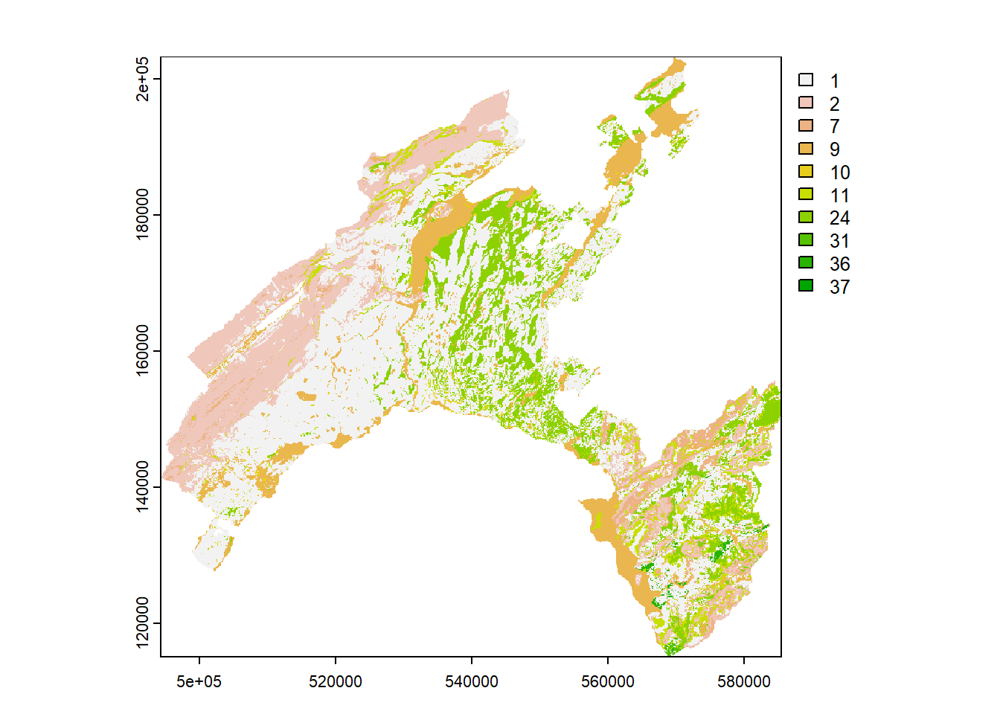
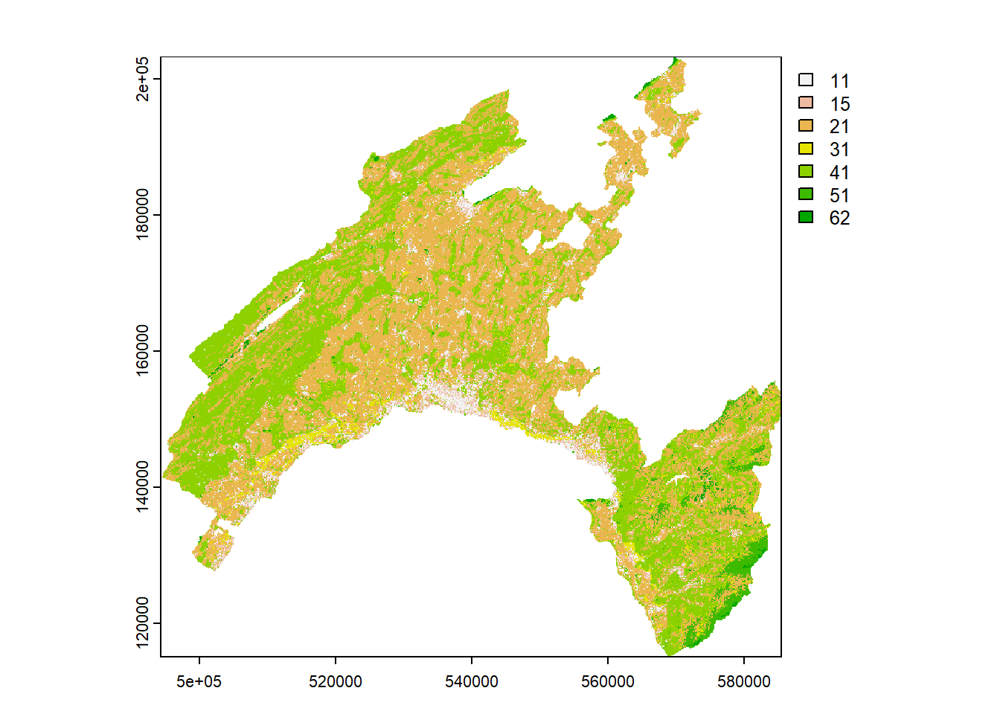
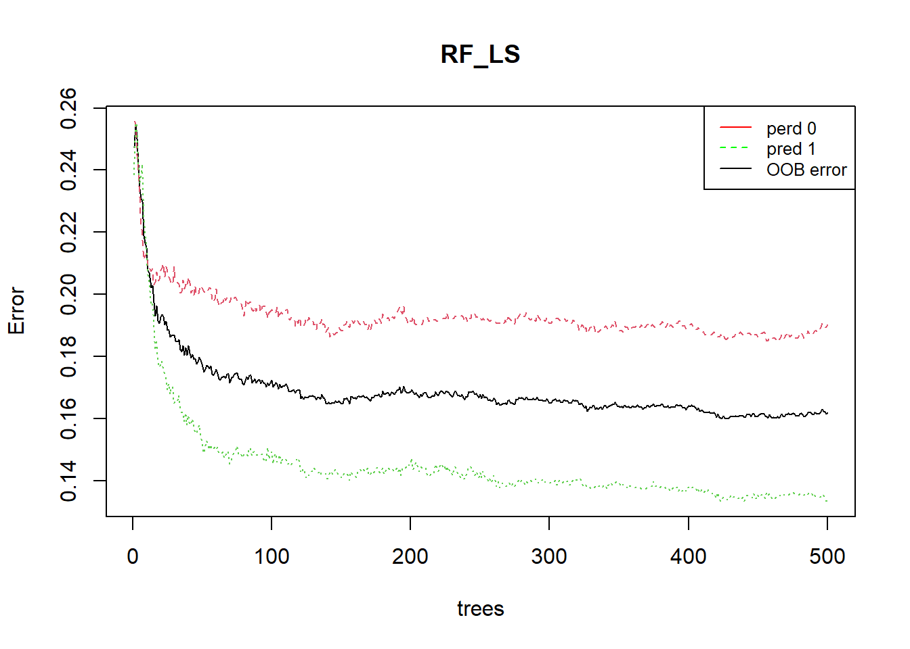
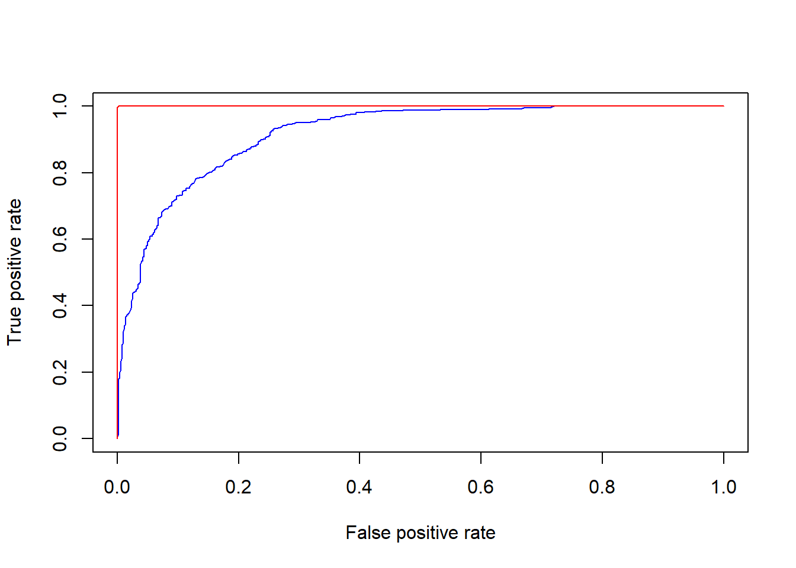
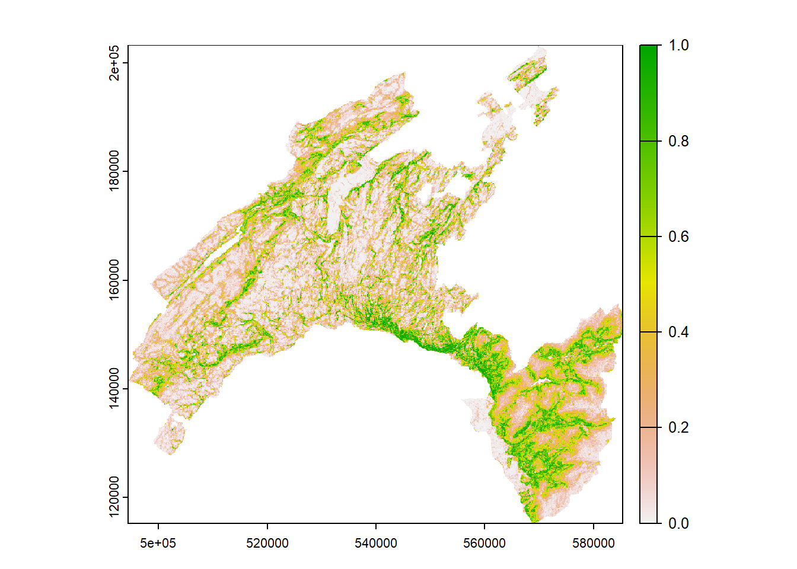
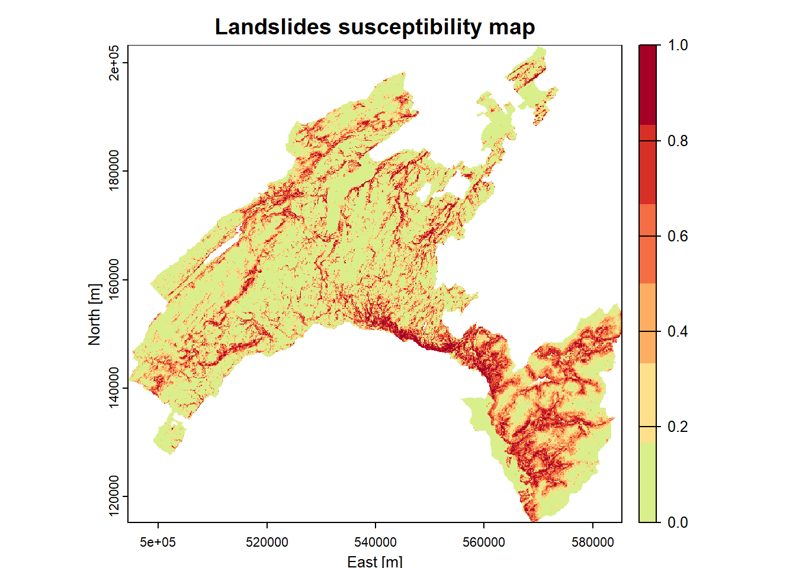
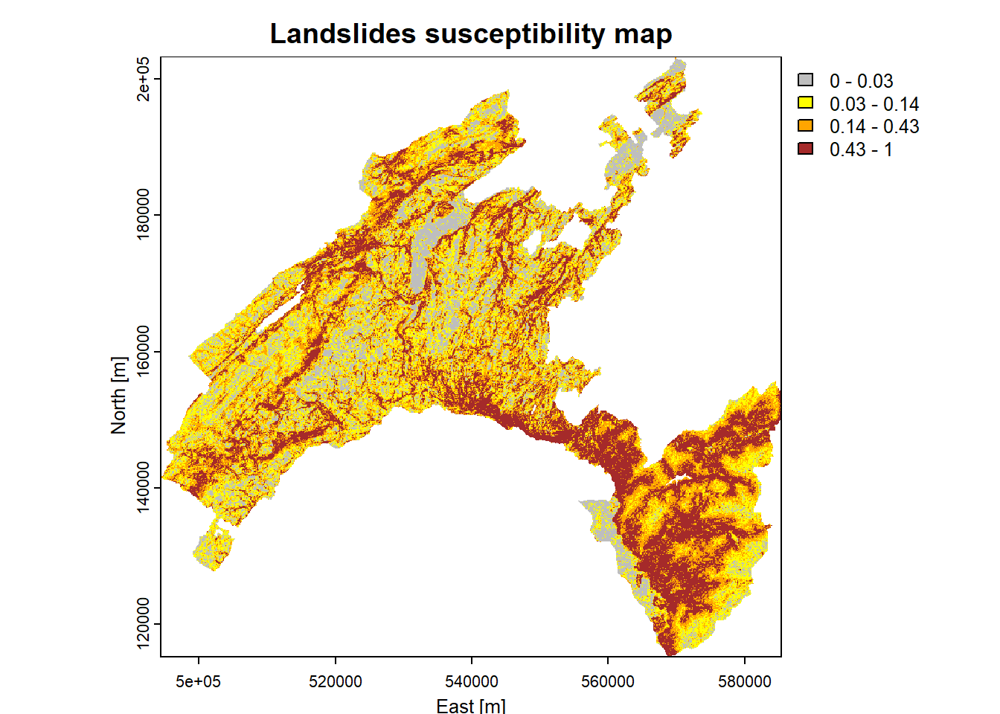
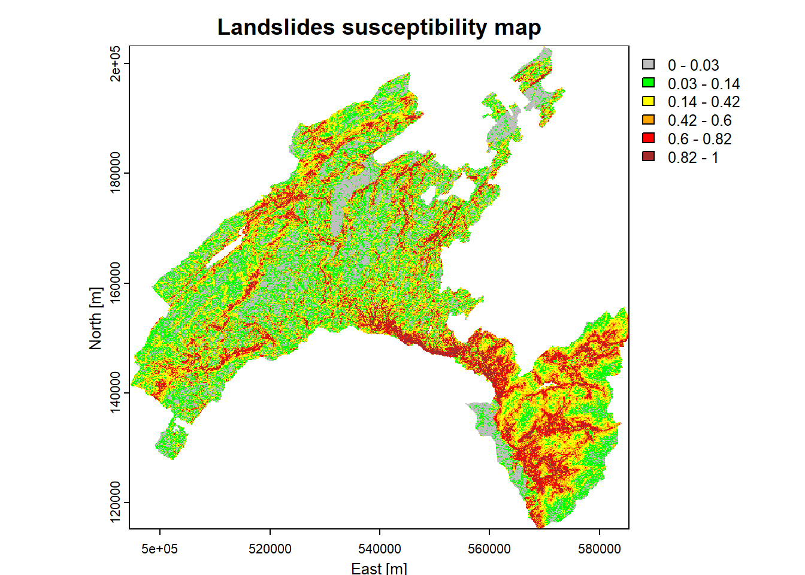

Chapter 5 Predictive Mapping of Natural Hazards Using Random Forest
Random Forest (RF) is a robust and widely-used machine learning algorithm particularly suited for predictive mapping in the context of natural hazards and susceptibility assessments. It operates by constructing multiple decision trees during training, and then aggregating their predictions to improve accuracy and generalizability (Breiman, 2001). For the sake of clarity, we define susceptibility of an area the potential to experience a particular hazard in the future, based only on the intrinsic local properties of the territory, assessed in terms of relative spatial likelihood. Machine Learning (ML) based approaches lend themselves particularly well to this purpose. Essentially ML includes algorithms capable of learning from and making predictions on data by modelling the hidden/non-linear relationships between a set of input variables – also known as predictors – and output observations.
In natural hazard and susceptibility mapping, RF can analyze complex relationships between environmental variables such as topography, soil type, vegetation cover, and climate data to predict the likelihood of hazardous events – like landslides, floods, or earthquakes – across a landscape. Its ability to handle large datasets, manage variables interactions, and provide importance rankings for predictor variables, makes it an invaluable tool for generating reliable susceptibility maps, which are crucial for disaster risk management and land-use planning.
5.1 RF for landslides susceptibility mapping
In this application, we explore the capabilities RF to elaborate landslides susceptibility mapping in Canton Vaud, Switzerland. Landslides are one of the major hazard occurring around the world. In Switzerland, landslides cause damages to infrastructures and sometimes threaten human lives, especially shallow landslides. Such slope movements are mainly triggered by intense rainfalls and generally very rapid and hardly predictable.
The research framework that inspired this computing lab refers to a pioneering study in susceptibility mapping for wildfire events by (Tonini et al., 2020) and further developed for the assessment of variable importance by (Trucchia et al., 2022). Analyses have been adapted to the case study of landslides. The overall methodology is described in the following graphic.

Figure 5.1: Basic elements of the generic methodology
5.2 Computing lab: Random Forest
5.2.1 Load the libraries
To perform the analysis, you have first to install the following libraries:
- terra: methods for spatial data analysis with vector (points, lines, polygons) and raster (grid) data
- readr: to provide a fast and friendly way to read tabulat data (like *.csv)
- randomForest: classification and regression, based on a forest of trees using random inputs
- dplyr: focused on tools for working with data frames
- pROC: allowing to compute, analyze ROC curves, and
- plotROC: to display ROC curve
- ggplot2: a system for declaratively creating graphics
5.2.2 Load the input datasets
In the following you will import the landslides punctual dataset including presences and absences (LS_pa) and the predictor variables (in raster format). This will enable to perform the exploratory data analyses step and the understanding of the input data structure.
5.2.2.1 Landslides dataset
The landslide inventory has been provided by the environmental office of the Canton Vaud. Only shallow landslides are used for susceptibility modelling. One pixel per landslide-area (namely the one located at the highest elevation) has been extracted. Since the landslide scarp is located in the upper part of the polygon, it makes sense to consider the highest pixel to characterize each single event.
Our model includes the implementation of the landslide pseudo-absences, which are the areas where the hazardous events did not took place (i.e. landslide location is known and the mapped footprint areas are available, but the non-landslide areas have to be defined). Indeed, to assure a good generalization of the model and to avoid the overestimation of the absences, pseudo-absences need to be generated in all the cases where they are not explicitly expressed. In this case study, an equal number of point as for presences has been randomly generated in the study area, except within landslides polygons, lakes and glaciers (that is what is called “validity domain”, where events could potentially occur).
# Import the boundary of Canton Vaud
Vaud <- vect("data/RF/Vaud_CH.shp")
Lake <- vect("data/RF/Lakes_VD.shp")
# Import the landslides dataset (dependent variable)
LS_pa <- read.csv("data/RF/LS_pa.csv")
# Convert the numeric values (0/1) as factor
##(i.e. categorical value)
LS_pa$LS<-as.factor(LS_pa$LS)
LS_vect<-vect(LS_pa, geom=c("X", "Y"),crs=crs(Vaud))
# Display the structure (str) and result summaries (summary)
str(LS_vect)## S4 class 'SpatVector' [package "terra"]## LS
## 0:2594
## 1:2594# Plot the events
plot(Vaud)
plot(Lake, col="lightblue", add=TRUE)
plot(LS_vect, col=LS_pa$LS, pch=20, cex=0.5, add=TRUE)

5.2.2.2 Predictor variables
Selecting predictive variables is a key stage in landslide susceptibility modelling when using a data-driven approach. There is no consensus about the number of variables and which variables should be used. In the present exercise we will use the following:
DEM (digital elevation model): provided by the Swiss Federal Office of Topography. The elevation is not a direct conditioning factor for landslide; however, it can reflect differences in vegetation characteristics and soil.
Slope: is one of the most explicating factor in landslide susceptibility modelling.
\[Slope = arctan(\sqrt{(dz/dx)^2 + (dz/dy)^2)} * (\pi/2)\]
Curvature: curvature is widely used in landslide susceptibility modelling. It allows assessing the water flow acceleration and sediment transport process (profile curvature) and the water flow propensity to converge and diverge (plan curvature). They have been derived from DEM and directly provided here.
TWI (topographical water index): topography plays a key role in the spatial distribution of soil hydrological conditions. Defining \(\alpha\) as the upslope contributing area describing the propensity of a cell to receive water, and \(\beta\) as the slope angle, TWI (compute by the formula below), reflects the propensity of a cell to evacuate water:
\[TWI=ln(\alpha/tan(\beta))\]
Distance to roads: roads build in mountainous areas often cut the slope, weakening the cohesion of the soil. Moreover, roads surfaces are highly impermeable. This raster has been elaborated by computing the euclidean distance from the swissTLMRegio map where roads are represented by lines.
Land Cover: developed by the Swiss administration and based on aerial photographs and control points. It includes 27 categories distributed in the following 6 domains: human modified surfaces, herbaceous vegetation, shrubs vegetation, tree vegetation, surfaces without vegetation, water surfaces (glaciers included).
Geology: the use of the lithology increase the performance of the susceptibility landslide models. We use here the map elaborated by the Canton Vaud, defining the geotypes and reclassified in 10 classes in order to differentiate sedimentary rocks.
Than the predictor variables have to be aggregated into a single object, storing multiple rasters.
We use here the generic function c to combine the single raster into a multiple-raster object.
## Import raster (independent variables) 25 meter resolution
landCover<-as.factor(rast("data/RF/landCover.tif"))
geology<-as.factor(rast("data/RF/geology.tif"))
planCurv<-rast("data/RF/plan_curvature.tif")/100
profCurv<-rast("data/RF/profil_curvature.tif")/100
# this because the input values was originally multiplied by 100
TWI <- rast("data/RF/TWI.tif")
Slope <- rast("data/RF/Slope.tif")
dem <- rast("data/RF/DEM.tif")
dist <- rast("data/RF/dist_roads.tif")
# Combine raster
features<-c(dist, dem, landCover, TWI, planCurv, profCurv, Slope, geology)
# Renames the input features
names(features)<-c("distRoad", "DEM", "landCover", "TWI", "planCurv", "profCurv", "slope", "geology")
# Mask to DEM extension
features <- terra::mask(features, dem)
plot(features)
5.2.3 The use of categorical variables in Machine Learning
The majority of ML algorithms (e.g., support vector machines, artificial neural network, deep learning) makes predictions on the base of the proximity between the values of the predictors, computed in terms of euclidean distance. This means that these algorithms can not handle directly categorical values (i.e., qualitative descriptors). Thus, in most of the cases, categorical variables need to be transformed into a numerical format. One of the advantage of using Random Forest (as implemented in R) is that it can handle directly categorical variables, since the algorithm operate by constructing a multitude of decision trees at training time and the best split is chosen just by counting the proportion of each class observation.
To understand the characteristics of the categorical variables, you can plot the tow raster Land Cover and Geology by using their original classes and look at the attribute table to analyse the corresponding definitions.



(#fig:cat_class)Categorical variables
5.2.4 Extract the values
In this step, you will extract the values of the predictors at each location in the landslides (presences and absences) dataset. The final output represents the input dataset with dependent (LS = landslides) and independent (raster features) variables.
# Extract values from the raster dataset (features)
LS_input <-extract(features, LS_vect, method="simple", xy=TRUE)
LS_input$LS <- as.factor(LS_vect$LS) # add LS
str(LS_input) # explore the dataset
# Remove extra column (ID)
LS_input <- LS_input[,2:ncol(LS_input)]
LS_input<-na.omit(LS_input)
# Explore the newly created input dataset
head(LS_input)
str(LS_input)5.2.5 Split the input dataset into training and testing
A well-established procedure in ML is to split the input dataset into training, validation, and testing.
- The training dataset is needed to calibrate the parameters of the model, which will be used to get predictions on new data.
- The purpose of the validation dataset is to optimize the hyperparameter of the model in the training phase. NB: in RF this subset is represented by the Out-Of-Bag (OOB)!
- The testing dataset is used in thein the prediction phase: results are predicted over these “new” observations (unused before) to provide an unbiased evaluation of the final model and to assess its performance.
# Shuffle the rows
set.seed(123) # to ensure reproducibility
LS_input_sh<-LS_input [sample(nrow(LS_input), nrow(LS_input)), ]
# Split the input dataset into training (80%) and testing (20%)
n <- nrow (LS_input_sh)
set.seed(123)
n_train <- round(0.80 * n)
train_indices <- sample(1:n, n_train)
# Create indices
LS_train <- LS_input_sh[train_indices, ]
LS_test <- LS_input_sh[-train_indices, ]
# Count the number of elements in the two subset: training and testing
count(LS_train)
count(LS_test)5.2.6 Run Random Forest
In RF a subset of the training dataset is generated by bootstrapping (i.e. random sampling with replacement).
For each subset a decision tree is grown and, at each split, the algorithm randomly selects a number of variables (mtry) and it computes the Gini index to identify the best one.
The process stops when each node contains less than a fixed number of data points.
The main hyperparameters that needs to be defined in RF are mtry and the total number of trees (ntrees).
In this lab we fix these values to 3 and 500, respectively.
The prediction error on the training dataset is finally assessed by evaluating predictions on those observations that were not used in the subset, defined as “out-of-bag” (OOB). This values is used the optimize the values of the hyperparameters, by a trial and error process (that is, trying to minimize the OOB estimate of error rate).
For the computation we introduce here the method proposed by Breiman (2001) and implemented in the R package randomForest (Liaw & Wiener, 2002).
5.2.7 RF main outputs
Printing the results of RF allows you to gain insight into the outputs of the implemented model, namely the following: a summary of the model hyperparameters, the OOB estimate of error rate, the confusion matrix (in this case a 2x2 matrix used for evaluating the performance of the classification model: 1==presence vs 0==absence).
The plot of the error rate is useful to estimate the decreasing values on the OOB and on the predictions (1==presence vs 0==absence) over increasing number of trees.
##
## Call:
## randomForest(x = LS_train[1:8], y = LS_train$LS, ntree = 500, mtry = 3, importance = TRUE, data = LS_train)
## Type of random forest: classification
## Number of trees: 500
## No. of variables tried at each split: 3
##
## OOB estimate of error rate: 16.19%
## Confusion matrix:
## 0 1 class.error
## 0 1681 395 0.1902697
## 1 275 1787 0.1333657# Show the predicted probability values
RF.predict <- predict(RF_LS,type="prob")
head(RF.predict) # 0 = absence ; 1 = presence## 0 1
## 1447 0.20108696 0.7989130
## 671 0.01463415 0.9853659
## 1121 0.22099448 0.7790055
## 4443 0.79207921 0.2079208
## 4032 0.21500000 0.7850000
## 2075 0.16666667 0.8333333# Plot the OOB error rate
plot(RF_LS)
legend(x="topright", legend=c("perd 0", "pred 1", "OOB error"),
col=c("red", "green", "black"), lty=1:2, cex=0.8)
5.2.8 Model evaluation
The prediction capability of the implemented RF model can be evaluated by predicting the results over previously unseen data, that is the testing dataset. The Area Under the “Receiver Operating Characteristic (ROC)” Curve (AUC) represents the evaluation score used here as indicator of the goodness of the model in classifying areas more susceptible to landslides. The ROC curve is a graphical technique based on the plot of the percentage of correct classification (the true positives rate) against the false positives rate (occurring when an outcome is incorrectly predicted as belonging to the class “1” when it actually belongs to the class “0”), evaluates for many thresholds. The AUC value lies between 0.5, denoting a bad classifier, and 1, denoting an excellent classifier, which, on the other hand, can indicate overfitting.
# Make predictions on the testing dataset
RFpred_test <- predict(object = RF_LS, newdata = LS_test, type="prob")
# Make predictions on the validation dataset (taining using the Out-of-bag)
RFpred_oob <- predict(object = RF_LS, newdata = LS_train, type="prob", OOB=TRUE)
roc_test <- roc(LS_test$LS, RFpred_test[,2])
roc_oob <- roc(LS_train$LS, RFpred_oob[,2])
plot.new()
plot(1-roc_test$specificities, roc_test$sensitivities, type = 'l', col = 'blue', xlab = "False positive rate", ylab = "True positive rate")
lines(1-roc_oob$specificities, roc_oob$sensitivities, type = 'l', col = 'red')
5.3 Susceptibility mapping
You have now all the elements necessary to elaborate the final landslide susceptibility map. This can be achieved by making predictions (of presence only) based on the values of the predictor variables, which are stored into the multiple-raster named features, created above.
# Convert the input multiple raster to data frame
features_df<-as.data.frame(features, xy=TRUE, na.rm=TRUE)
# Predict results of RF (probability of fires presence: index = 2) to the feature space
## this operation can take several minuts to run!
scp_map<-predict(object = RF_LS, newdata = features_df, type="prob", index=2)
scp_df=as.data.frame(scp_map) # convert to data frame
# get coordinates
scp_df$X=features_df$x
scp_df$Y=features_df$y
# Convert to raster the probability to get a landslide
## 3=X, 4=Y, 2=probability of presence (1)
scp_rast=rast(scp_df[,c(3,4,2)],type="xyz")
summary(scp_rast)
plot(scp_rast)
# Save all outputs
## this operation can take several minuts to run!
save.image(file="LSM_RF.RData")
# Export susceptibility map as raster
writeRaster(scp_rast,"Susceptibility_LSmap.tif",overwrite=T) 5.3.1 Class intervals for decision maker
What can you say by looking at this map? Actually a risk heat map like this provide a data visualization tool for communicating the level for a specific risk to occur. These maps helps authorities to identify and prioritize the risks associated with a given hazard.
Normally an authority (i.e., a decision maker) prioritize its efforts based on the available resources it has. So, it can be more useful to detect the areas with the highest probability of burning based on certain intervals (i.e., breaks). The authority can thus concentrate its resources for preventive actions on a given threshold (such as 5%, 10%, or 20%) of the area with the highest probability of burning, instead of concentrates on the areas with a “stochastic” output probability value of 0.8 (for example).
5.3.1.1 Equal intervals
Susceptibility maps are based on equal intervals, five classes (each 20%) in this case.
library("RColorBrewer")
plot(scp_rast, xlab = "East [m]", ylab = "North [m]", main = "Landslides susceptibility map", col = rev(c('#a50026','#d73027','#f46d43','#fdae61','#fee08b','#d9ef8b')))
5.3.1.2 Quartile
Breaks are chosen based on the summary statics: these values corresponds to the quartiles of the p-value distribution (values divided into four equal partitions).
brk<-c(0, 0.03, 0.14, 0.43, 1)
plot(scp_rast, xlab = "East [m]", ylab = "North [m]",
main = "Landslides susceptibility map",
col = rev(c("brown", "orange", "yellow", "grey")), breaks=brk) 
5.3.1.3 Percentiles
Breaks are chosen based on well-established percentile classes. For exaple, in this case the 20th percentile correspond to the p-value below wich the 25% of the observation lie, while the 95th can be interpreted as the p-value above which the complementary 5% of the observation lie. The legend show the p-values correspondig to the percentile classes indicated below.
# Output predicted values are transformed to a vector
pred.vect <- as.vector(scp_map[, 2])
# The function "quantile" is used to fix classes
qtl.pred <- quantile(pred.vect, probs=c(0.25,0.5,0.75,0.85,0.95), na.rm = TRUE)
qtl.pred## 25% 50% 75% 85% 95%
## 0.046 0.166 0.448 0.614 0.832# and then extract the corresponding values
qtl.int<- c(0,0.03,0.14,0.42,0.6,0.82,1)
plot(scp_rast, xlab = "East [m]", ylab = "North [m]",
main = "Landslides susceptibility map",
col = rev(c("brown", "red", "orange","yellow", "green", "grey")), breaks=qtl.int)
5.4 Conclusions and further analyses
This exercise allowed you to familiarize with Random Forest, by the proposed application about landslides susceptibility mapping and variables importance assessment.
To ensure that everything is perfectly clear, we propose you to answer the following questions.
Why is it important to implement the pseudo-absences, other that the presences (i.e., the observations) in a data-driven modelization?
What is the difference between a numerical and a categorical variable? Give some examples of both types. Why RF can handle directly native categorical variables? Is it the same for other algorithms (like logistic regression or neural network)?
Which is the values of the OOB estimate error rate of your model? Which parameters you can change to try to reduce it? Be brave and do it (i.e., change the values for ntree and mtry, than analyse which values for the AUC you obtain and which model perform better.
5.5 Further reading on this topic
The research framework that inspired this computing lab refers to a pioneering study in susceptibility mapping for wildfire events by (Tonini et al., 2020) and further developed for the assessment of variable importance by (Trucchia et al., 2022). Analyses have been adapted to the case study of landslides.